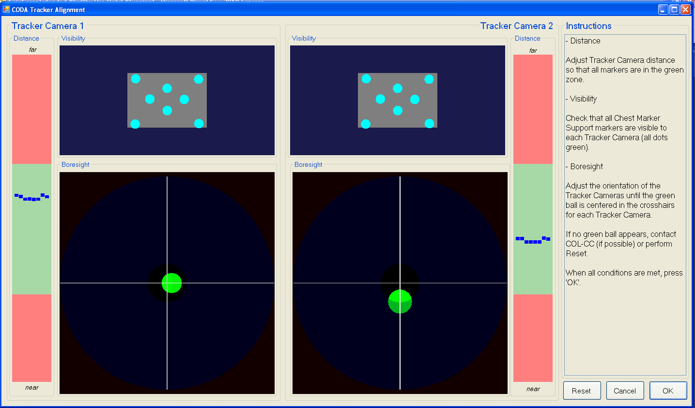

<p style="text-align:center; font-size:150%">
<strong>Tracker Alignment Running</strong>
</p>
<p style="text-align:center">

</p>
<p style="text-align:center; font-size:120%">
<strong>Follow the instructions on the screen.</strong>
</p>
